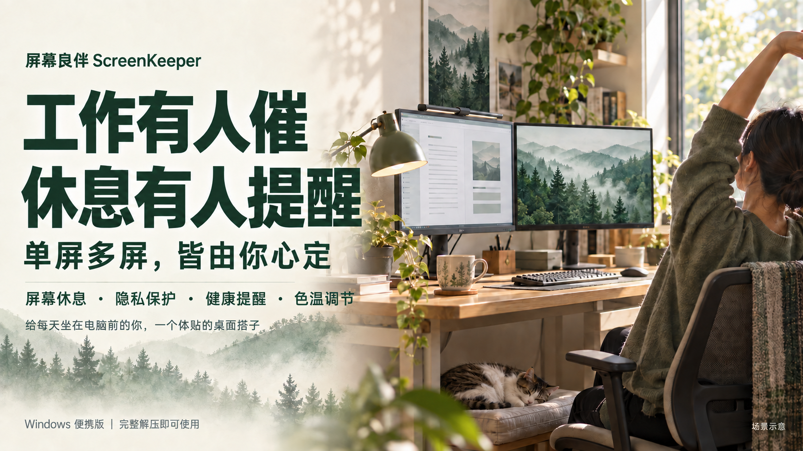
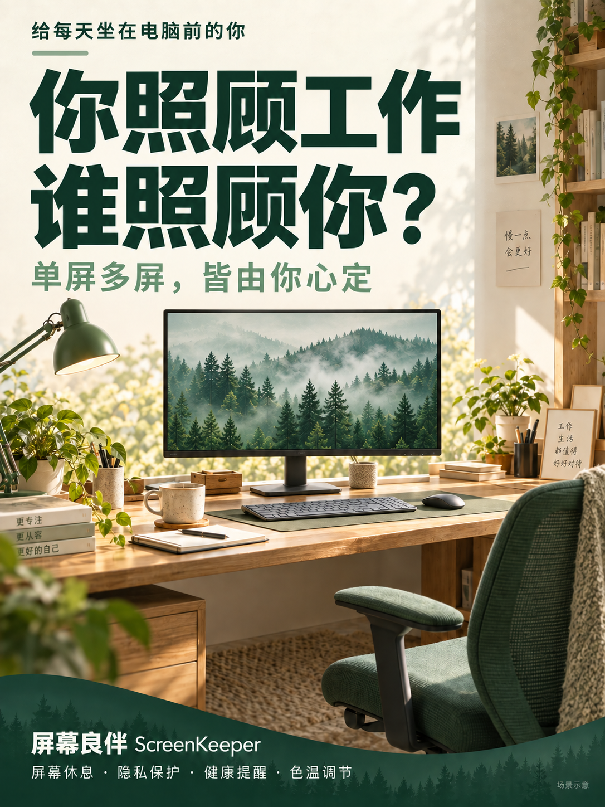
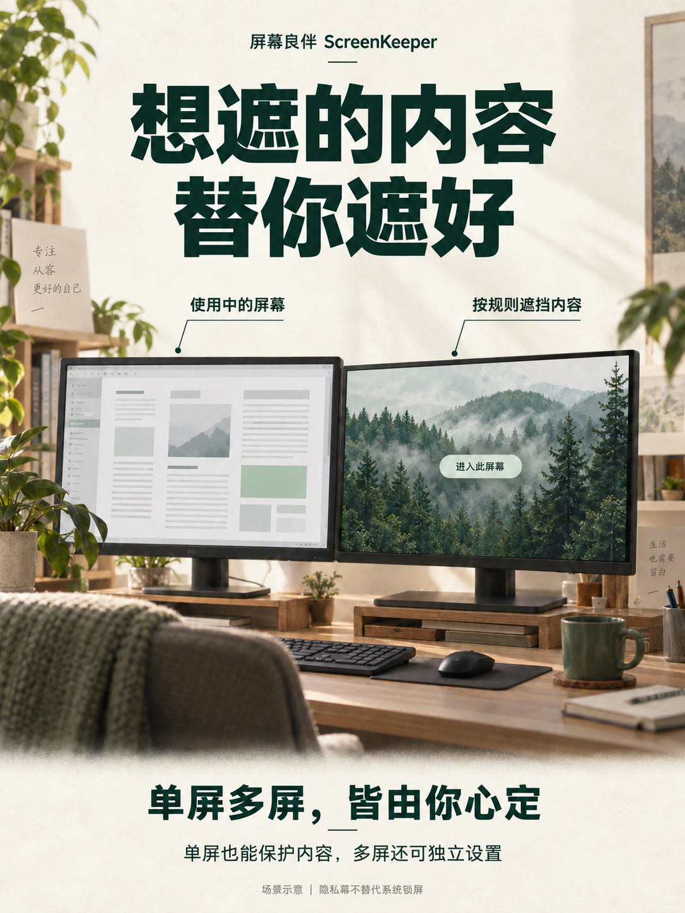
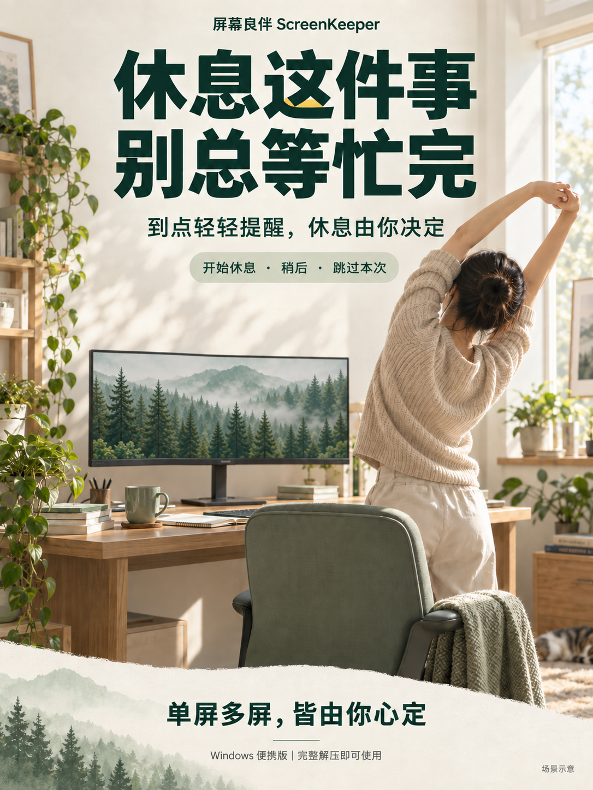

一个体贴的桌面搭子。四个功能，用一块屏幕也能体验。点击播放，直接看屏幕里的变化。
空闲等待 → 遮黑 → 检测到活动后恢复
自动遮挡 → 鼠标经过仍保护 → 点击进入
到点提醒 → 开始休息 → 倒计时
保持原色 → 作息暖色 → 原色对比
四段均为单屏效果示意，等待时间已压缩。多屏可分别设置屏幕休息、隐私与色温；健康提醒使用独立工作周期。隐私幕不替代系统锁屏，色温需先完成客户端验证。



